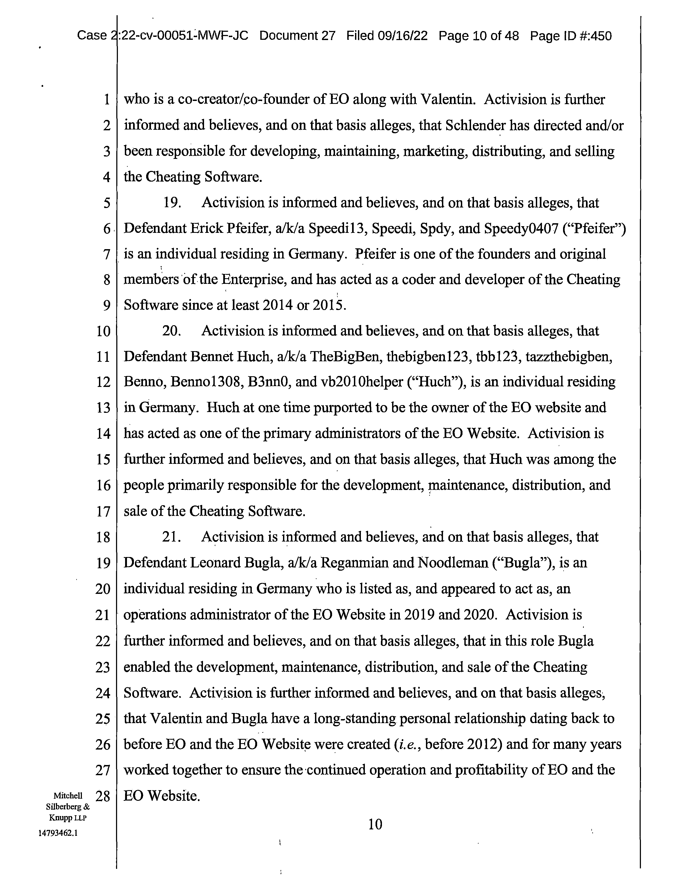
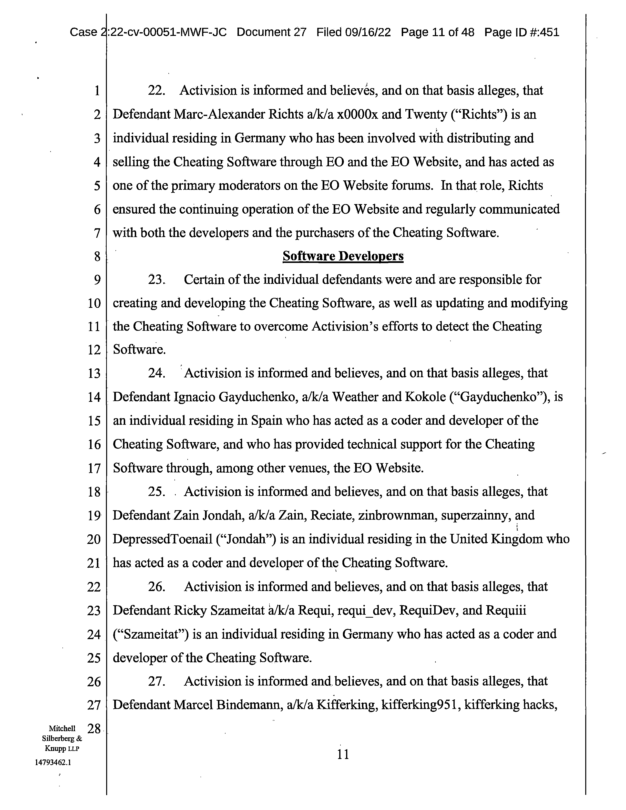
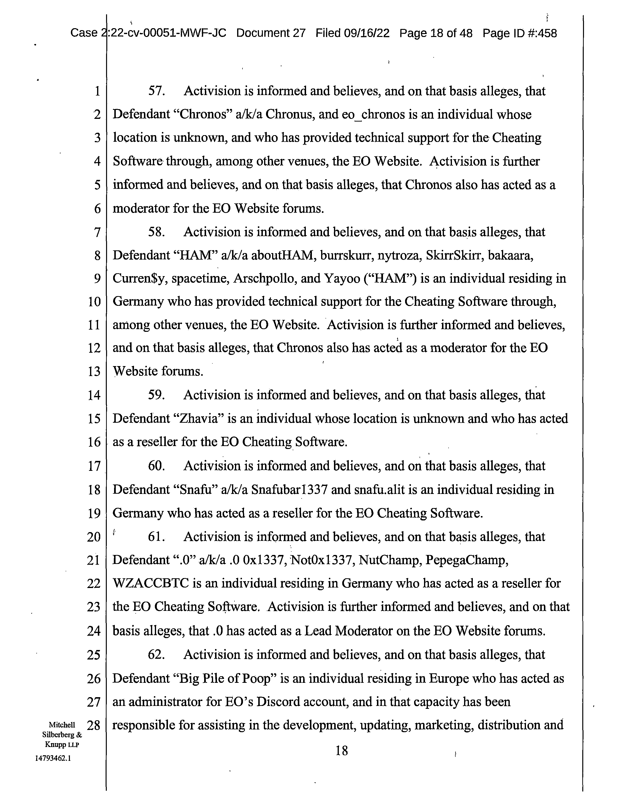
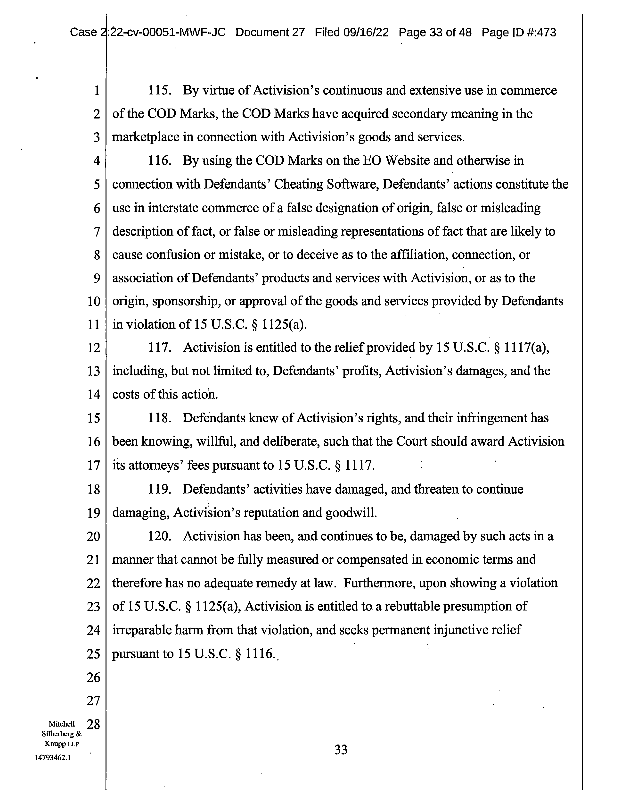
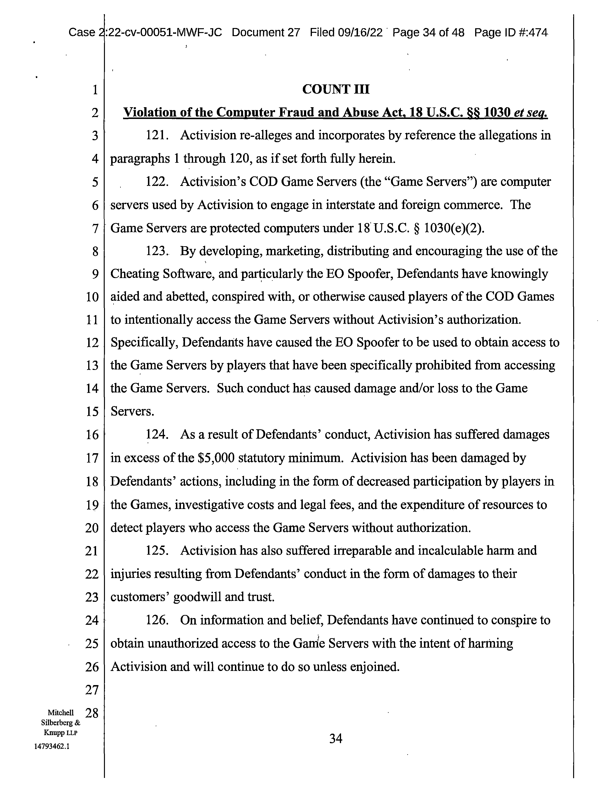
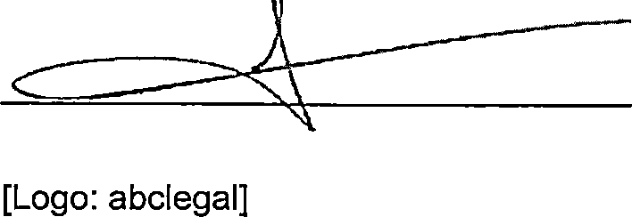

Case 2:22-cv-00051-MWF-JC Document 102 Filed 04/05/23 Page 1 of 129 Page ID #:2969
1 MARC E. MAYER (SBN 190969)
mem@msk.com
2 MARK C. HUMPHREY (SBN 291718)
mxh@msk.com
3 GENEVIEVE L. JAVIDZAD (SBN 336138)
glj@msk.com
4 MITCHELL SILBERBERG & KNUPP LLP
2049 Century Park East, 18th Floor
5 Los Angeles, CA 90067-3120
Telephone: (310) 312-2000
6 Facsimile: (310) 312-3100
7 THERESA B. BOWMAN (pro hac vice)
tbb@msk.com
8 MITCHELL SILBERBERG & KNUPP LLP
1818 N Street NW, Suite 700
9 Washington, DC 20036
Telephone: (202) 355-7900
10 Facsimile: (202) 355-7899
11 Attorneys for Plaintiff
12
13
UNITED STATES DISTRICT COURT
14
CENTRAL DISTRICT OF CALIFORNIA
15
16 ACTIVISION PUBLISHING, INC., a
CASE NO. 2:22-cv-00051-MWF (JCx)
Delaware corporation,
17
[Assigned to Judge Michael W. Fitzgerald]
Plaintiff,
18
v.
PROOF OF SERVICE OF
19
SUMMONS ON DEFENDANT
ENGINEOWNING UG, a German
CHARLIE WIEST
20 corporation, et al.,
21 Defendants.
Complaint Filed: 1/4/2022
Amended Complaint Filed: 9/16/2022
22
Defendants.
23
24
25
26
27
Mitchell
28
Silberberg &
Knupp LLP
15304752.1
Case 2:22-cv-00051-MWF-JC Document 102 Filed 04/05/23 Page 2 of 129 Page ID #:2970
1 TO THE ABOVE-ENTITLED COURT:
2
PLEASE TAKE NOTICE that Plaintiff Activision Publishing, Inc.
3 (“Plaintiff”) effectuated service of the following initiating documents on Defendant
4 Charlie Wiest:
5
1. Summons on Complaint;
6
2. Civil Cover Sheet;
7
3. Complaint;
8
4. Complaint Translated in German;
9
5. Civil Cover Sheet Translated in German; and,
10
6. Summons on Complaint Translated in German.
11 These initiating documents were served by the following method:
12
A.
In compliance with the Hague Convention on the Service Abroad of
13 Judicial and Extra-Judicial Documents in Civil and Commercial Matters (Done at
14 The Hague November 15, 1965) (Entered Into Force for the U.S. on February 10,
15 1969) and in accordance to section 180 of the Civil Procedure Code at
16 Friedenstrasse 13c, 15741 Bestensee on October 25, 2022, see Exhibit A.
17 DATED: April 5, 2023
MARC E. MAYER
18
MARK C. HUMPHREY
THERESA B. BOWMAN
19
GENEVIEVE L. JAVIDZAD
MITCHELL SILBERBERG & KNUPP LLP
20
21
By: /s/ Marc E. Mayer
22
Marc E. Mayer (SBN 190969)
Attorneys for Plaintiff
23
24
25
26
27
Mitchell
28
Silberberg &
Knupp LLP
2
15304752.1
Case 2:22-cv-00051-MWF-JC Document 102 Filed 04/05/23 Page 3 of 129 Page ID #:2971
EXHIBIT A
Exhibit A
Page 3
Case 2:22-cv-00051-MWF-JC Document 102 Filed 04/05/23 Page 4 of 129 Page ID #:2972
Exhibit A
Page 4
Case 2:22-cv-00051-MWF-JC Document 102 Filed 04/05/23 Page 5 of 129 Page ID #:2973
Exhibit A
Page 5
Case 2:22-cv-00051-MWF-JC Document 102 Filed 04/05/23 Page 6 of 129 Page ID #:2974
Exhibit A
Page 6
Case 2:22-cv-00051-MWF-JC Document 102 Filed 04/05/23 Page 7 of 129 Page ID #:2975
Exhibit A
Page 7

Case 2:22-cv-00051-MWF-JC Document 102 Filed 04/05/23 Page 8 of 129 Page ID #:2976
Exhibit A
Page 8
Case 2:22-cv-00051-MWF-JC Document 102 Filed 04/05/23 Page 9 of 129 Page ID #:2977
Exhibit A
Page 9
Case 2:22-cv-00051-MWF-JC Document 102 Filed 04/05/23 Page 10 of 129 Page ID
#:2978
Exhibit A
Page 10
Case 2:22-cv-00051-MWF-JC Document 102 Filed 04/05/23 Page 11 of 129 Page ID
#:2979
Exhibit A
Page 11

Case 2:22-cv-00051-MWF-JC Document 102 Filed 04/05/23 Page 12 of 129 Page ID
#:2980
Exhibit A
Page 12
Case 2:22-cv-00051-MWF-JC Document 102 Filed 04/05/23 Page 13 of 129 Page ID
#:2981
Exhibit A
Page 13
Case 2:22-cv-00051-MWF-JC Document 102 Filed 04/05/23 Page 14 of 129 Page ID
#:2982
Exhibit A
Page 14
Case 2:22-cv-00051-MWF-JC Document 102 Filed 04/05/23 Page 15 of 129 Page ID
#:2983
Exhibit A
Page 15
Case 2:22-cv-00051-MWF-JC Document 102 Filed 04/05/23 Page 16 of 129 Page ID
#:2984
Exhibit A
Page 16
Case 2:22-cv-00051-MWF-JC Document 102 Filed 04/05/23 Page 17 of 129 Page ID
#:2985
Exhibit A
Page 17
Case 2:22-cv-00051-MWF-JC Document 102 Filed 04/05/23 Page 18 of 129 Page ID
#:2986
Exhibit A
Page 18
Case 2:22-cv-00051-MWF-JC Document 102 Filed 04/05/23 Page 19 of 129 Page ID
#:2987
Exhibit A
Page 19
Case 2:22-cv-00051-MWF-JC Document 102 Filed 04/05/23 Page 20 of 129 Page ID
#:2988
Exhibit A
Page 20


Case 2:22-cv-00051-MWF-JC Document 102 Filed 04/05/23 Page 21 of 129 Page ID
#:2989
Exhibit A
Page 21
Case 2:22-cv-00051-MWF-JC Document 102 Filed 04/05/23 Page 22 of 129 Page ID
#:2990
Exhibit A
Page 22
Case 2:22-cv-00051-MWF-JC Document 102 Filed 04/05/23 Page 23 of 129 Page ID
#:2991
Exhibit A
Page 23
Case 2:22-cv-00051-MWF-JC Document 102 Filed 04/05/23 Page 24 of 129 Page ID
#:2992
Exhibit A
Page 24

Case 2:22-cv-00051-MWF-JC Document 102 Filed 04/05/23 Page 25 of 129 Page ID
#:2993
Exhibit A
Page 25

Case 2:22-cv-00051-MWF-JC Document 102 Filed 04/05/23 Page 26 of 129 Page ID
#:2994
Exhibit A
Page 26
Case 2:22-cv-00051-MWF-JC Document 102 Filed 04/05/23 Page 27 of 129 Page ID
#:2995
Exhibit A
Page 27
Case 2:22-cv-00051-MWF-JC Document 102 Filed 04/05/23 Page 28 of 129 Page ID
#:2996
Exhibit A
Page 28
Case 2:22-cv-00051-MWF-JC Document 102 Filed 04/05/23 Page 29 of 129 Page ID
#:2997
Exhibit A
Page 29
Case 2:22-cv-00051-MWF-JC Document 102 Filed 04/05/23 Page 30 of 129 Page ID
#:2998
Exhibit A
Page 30
Case 2:22-cv-00051-MWF-JC Document 102 Filed 04/05/23 Page 31 of 129 Page ID
#:2999
Exhibit A
Page 31
Case 2:22-cv-00051-MWF-JC Document 102 Filed 04/05/23 Page 32 of 129 Page ID
#:3000
Exhibit A
Page 32

Case 2:22-cv-00051-MWF-JC Document 102 Filed 04/05/23 Page 33 of 129 Page ID
#:3001
Exhibit A
Page 33

Case 2:22-cv-00051-MWF-JC Document 102 Filed 04/05/23 Page 34 of 129 Page ID
#:3002
Exhibit A
Page 34
Case 2:22-cv-00051-MWF-JC Document 102 Filed 04/05/23 Page 35 of 129 Page ID
#:3003
Exhibit A
Page 35
Case 2:22-cv-00051-MWF-JC Document 102 Filed 04/05/23 Page 36 of 129 Page ID
#:3004
Exhibit A
Page 36
Case 2:22-cv-00051-MWF-JC Document 102 Filed 04/05/23 Page 37 of 129 Page ID
#:3005
Exhibit A
Page 37
Case 2:22-cv-00051-MWF-JC Document 102 Filed 04/05/23 Page 38 of 129 Page ID
#:3006
Exhibit A
Page 38
Case 2:22-cv-00051-MWF-JC Document 102 Filed 04/05/23 Page 39 of 129 Page ID
#:3007
Exhibit A
Page 39
Case 2:22-cv-00051-MWF-JC Document 102 Filed 04/05/23 Page 40 of 129 Page ID
#:3008
Exhibit A
Page 40
Case 2:22-cv-00051-MWF-JC Document 102 Filed 04/05/23 Page 41 of 129 Page ID
#:3009
Exhibit A
Page 41
Case 2:22-cv-00051-MWF-JC Document 102 Filed 04/05/23 Page 42 of 129 Page ID
#:3010
Exhibit A
Page 42
Case 2:22-cv-00051-MWF-JC Document 102 Filed 04/05/23 Page 43 of 129 Page ID
#:3011
Exhibit A
Page 43
Case 2:22-cv-00051-MWF-JC Document 102 Filed 04/05/23 Page 44 of 129 Page ID
#:3012
Exhibit A
Page 44

Case 2:22-cv-00051-MWF-JC Document 102 Filed 04/05/23 Page 45 of 129 Page ID
#:3013
Exhibit A
Page 45
Case 2:22-cv-00051-MWF-JC Document 102 Filed 04/05/23 Page 46 of 129 Page ID
#:3014
Exhibit A
Page 46
Case 2:22-cv-00051-MWF-JC Document 102 Filed 04/05/23 Page 47 of 129 Page ID
#:3015
Exhibit A
Page 47

Case 2:22-cv-00051-MWF-JC Document 102 Filed 04/05/23 Page 48 of 129 Page ID
#:3016
Exhibit A
Page 48

Case 2:22-cv-00051-MWF-JC Document 102 Filed 04/05/23 Page 49 of 129 Page ID
#:3017
Exhibit A
Page 49
Case 2:22-cv-00051-MWF-JC Document 102 Filed 04/05/23 Page 50 of 129 Page ID
#:3018
Exhibit A
Page 50
Case 2:22-cv-00051-MWF-JC Document 102 Filed 04/05/23 Page 51 of 129 Page ID
#:3019
Exhibit A
Page 51

Case 2:22-cv-00051-MWF-JC Document 102 Filed 04/05/23 Page 52 of 129 Page ID
#:3020
Exhibit A
Page 52
Case 2:22-cv-00051-MWF-JC Document 102 Filed 04/05/23 Page 53 of 129 Page ID
#:3021
Exhibit A
Page 53
Case 2:22-cv-00051-MWF-JC Document 102 Filed 04/05/23 Page 54 of 129 Page ID
#:3022
Exhibit A
Page 54
Case 2:22-cv-00051-MWF-JC Document 102 Filed 04/05/23 Page 55 of 129 Page ID
#:3023
Exhibit A
Page 55
Case 2:22-cv-00051-MWF-JC Document 102 Filed 04/05/23 Page 56 of 129 Page ID
#:3024
Exhibit A
Page 56
Case 2:22-cv-00051-MWF-JC Document 102 Filed 04/05/23 Page 57 of 129 Page ID
#:3025
Exhibit A
Page 57
Case 2:22-cv-00051-MWF-JC Document 102 Filed 04/05/23 Page 58 of 129 Page ID
#:3026
Exhibit A
Page 58

Case 2:22-cv-00051-MWF-JC Document 102 Filed 04/05/23 Page 59 of 129 Page ID
#:3027
Exhibit A
Page 59
Case 2:22-cv-00051-MWF-JC Document 102 Filed 04/05/23 Page 60 of 129 Page ID
#:3028
Exhibit A
Page 60
Case 2:22-cv-00051-MWF-JC Document 102 Filed 04/05/23 Page 61 of 129 Page ID
#:3029
Exhibit A
Page 61
Case 2:22-cv-00051-MWF-JC Document 102 Filed 04/05/23 Page 62 of 129 Page ID
#:3030
Exhibit A
Page 62
Case 2:22-cv-00051-MWF-JC Document 102 Filed 04/05/23 Page 63 of 129 Page ID
#:3031
Exhibit A
Page 63

Case 2:22-cv-00051-MWF-JC Document 102 Filed 04/05/23 Page 64 of 129 Page ID
#:3032
Exhibit A
Page 64
Case 2:22-cv-00051-MWF-JC Document 102 Filed 04/05/23 Page 65 of 129 Page ID
#:3033
Exhibit A
Page 65
Case 2:22-cv-00051-MWF-JC Document 102 Filed 04/05/23 Page 66 of 129 Page ID
#:3034
Exhibit A
Page 66
Case 2:22-cv-00051-MWF-JC Document 102 Filed 04/05/23 Page 67 of 129 Page ID
#:3035
Exhibit A
Page 67
Case 2:22-cv-00051-MWF-JC Document 102 Filed 04/05/23 Page 68 of 129 Page ID
#:3036
Exhibit A
Page 68
Case 2:22-cv-00051-MWF-JC Document 102 Filed 04/05/23 Page 69 of 129 Page ID
#:3037
Exhibit A
Page 69
Case 2:22-cv-00051-MWF-JC Document 102 Filed 04/05/23 Page 70 of 129 Page ID
#:3038
Exhibit A
Page 70
Case 2:22-cv-00051-MWF-JC Document 102 Filed 04/05/23 Page 71 of 129 Page ID
#:3039
Exhibit A
Page 71
Case 2:22-cv-00051-MWF-JC Document 102 Filed 04/05/23 Page 72 of 129 Page ID
#:3040
Exhibit A
Page 72

Case 2:22-cv-00051-MWF-JC Document 102 Filed 04/05/23 Page 73 of 129 Page ID
#:3041
Exhibit A
Page 73
Case 2:22-cv-00051-MWF-JC Document 102 Filed 04/05/23 Page 74 of 129 Page ID
#:3042
Exhibit A
Page 74
Case 2:22-cv-00051-MWF-JC Document 102 Filed 04/05/23 Page 75 of 129 Page ID
#:3043
Exhibit A
Page 75
Case 2:22-cv-00051-MWF-JC Document 102 Filed 04/05/23 Page 76 of 129 Page ID
#:3044
Exhibit A
Page 76
Case 2:22-cv-00051-MWF-JC Document 102 Filed 04/05/23 Page 77 of 129 Page ID
#:3045
Exhibit A
Page 77
Case 2:22-cv-00051-MWF-JC Document 102 Filed 04/05/23 Page 78 of 129 Page ID
#:3046
Exhibit A
Page 78
Case 2:22-cv-00051-MWF-JC Document 102 Filed 04/05/23 Page 79 of 129 Page ID
#:3047
Exhibit A
Page 79
Case 2:22-cv-00051-MWF-JC Document 102 Filed 04/05/23 Page 80 of 129 Page ID
#:3048
Exhibit A
Page 80
Case 2:22-cv-00051-MWF-JC Document 102 Filed 04/05/23 Page 81 of 129 Page ID
#:3049
Exhibit A
Page 81
Case 2:22-cv-00051-MWF-JC Document 102 Filed 04/05/23 Page 82 of 129 Page ID
#:3050
Exhibit A
Page 82
Case 2:22-cv-00051-MWF-JC Document 102 Filed 04/05/23 Page 83 of 129 Page ID
#:3051
Exhibit A
Page 83
Case 2:22-cv-00051-MWF-JC Document 102 Filed 04/05/23 Page 84 of 129 Page ID
#:3052
Exhibit A
Page 84
Case 2:22-cv-00051-MWF-JC Document 102 Filed 04/05/23 Page 85 of 129 Page ID
#:3053
Exhibit A
Page 85
Case 2:22-cv-00051-MWF-JC Document 102 Filed 04/05/23 Page 86 of 129 Page ID
#:3054
Exhibit A
Page 86
Case 2:22-cv-00051-MWF-JC Document 102 Filed 04/05/23 Page 87 of 129 Page ID
#:3055
Exhibit A
Page 87
Case 2:22-cv-00051-MWF-JC Document 102 Filed 04/05/23 Page 88 of 129 Page ID
#:3056
Exhibit A
Page 88
Case 2:22-cv-00051-MWF-JC Document 102 Filed 04/05/23 Page 89 of 129 Page ID
#:3057
Exhibit A
Page 89
Case 2:22-cv-00051-MWF-JC Document 102 Filed 04/05/23 Page 90 of 129 Page ID
#:3058
Exhibit A
Page 90
Case 2:22-cv-00051-MWF-JC Document 102 Filed 04/05/23 Page 91 of 129 Page ID
#:3059
Exhibit A
Page 91
Case 2:22-cv-00051-MWF-JC Document 102 Filed 04/05/23 Page 92 of 129 Page ID
#:3060
Exhibit A
Page 92
Case 2:22-cv-00051-MWF-JC Document 102 Filed 04/05/23 Page 93 of 129 Page ID
#:3061
Exhibit A
Page 93

Case 2:22-cv-00051-MWF-JC Document 102 Filed 04/05/23 Page 94 of 129 Page ID
#:3062
Exhibit A
Page 94
Case 2:22-cv-00051-MWF-JC Document 102 Filed 04/05/23 Page 95 of 129 Page ID
#:3063
Exhibit A
Page 95

Case 2:22-cv-00051-MWF-JC Document 102 Filed 04/05/23 Page 96 of 129 Page ID
#:3064
Exhibit A
Page 96
Case 2:22-cv-00051-MWF-JC Document 102 Filed 04/05/23 Page 97 of 129 Page ID
#:3065
Exhibit A
Page 97
Case 2:22-cv-00051-MWF-JC Document 102 Filed 04/05/23 Page 98 of 129 Page ID
#:3066
Exhibit A
Page 98
Case 2:22-cv-00051-MWF-JC Document 102 Filed 04/05/23 Page 99 of 129 Page ID
#:3067
Exhibit A
Page 99
Case 2:22-cv-00051-MWF-JC Document 102 Filed 04/05/23 Page 100 of 129 Page ID
#:3068
Exhibit A
Page 100
Case 2:22-cv-00051-MWF-JC Document 102 Filed 04/05/23 Page 101 of 129 Page ID
#:3069
Exhibit A
Page 101
Case 2:22-cv-00051-MWF-JC Document 102 Filed 04/05/23 Page 102 of 129 Page ID
#:3070
Exhibit A
Page 102

Case 2:22-cv-00051-MWF-JC Document 102 Filed 04/05/23 Page 103 of 129 Page ID
#:3071
Exhibit A
Page 103
Case 2:22-cv-00051-MWF-JC Document 102 Filed 04/05/23 Page 104 of 129 Page ID
#:3072
Exhibit A
Page 104
Case 2:22-cv-00051-MWF-JC Document 102 Filed 04/05/23 Page 105 of 129 Page ID
#:3073
Exhibit A
Page 105
Case 2:22-cv-00051-MWF-JC Document 102 Filed 04/05/23 Page 106 of 129 Page ID
#:3074
Exhibit A
Page 106
Case 2:22-cv-00051-MWF-JC Document 102 Filed 04/05/23 Page 107 of 129 Page ID
#:3075
Exhibit A
Page 107
Case 2:22-cv-00051-MWF-JC Document 102 Filed 04/05/23 Page 108 of 129 Page ID
#:3076
Exhibit A
Page 108
Case 2:22-cv-00051-MWF-JC Document 102 Filed 04/05/23 Page 109 of 129 Page ID
#:3077
Exhibit A
Page 109

Case 2:22-cv-00051-MWF-JC Document 102 Filed 04/05/23 Page 110 of 129 Page ID
#:3078
Exhibit A
Page 110
Case 2:22-cv-00051-MWF-JC Document 102 Filed 04/05/23 Page 111 of 129 Page ID
#:3079
Exhibit A
Page 111
Case 2:22-cv-00051-MWF-JC Document 102 Filed 04/05/23 Page 112 of 129 Page ID
#:3080
Exhibit A
Page 112
Case 2:22-cv-00051-MWF-JC Document 102 Filed 04/05/23 Page 113 of 129 Page ID
#:3081
Exhibit A
Page 113

Case 2:22-cv-00051-MWF-JC Document 102 Filed 04/05/23 Page 114 of 129 Page ID
#:3082
Exhibit A
Page 114
Case 2:22-cv-00051-MWF-JC Document 102 Filed 04/05/23 Page 115 of 129 Page ID
#:3083
Exhibit A
Page 115
Case 2:22-cv-00051-MWF-JC Document 102 Filed 04/05/23 Page 116 of 129 Page ID
#:3084
Exhibit A
Page 116
Case 2:22-cv-00051-MWF-JC Document 102 Filed 04/05/23 Page 117 of 129 Page ID
#:3085
Exhibit A
Page 117
Case 2:22-cv-00051-MWF-JC Document 102 Filed 04/05/23 Page 118 of 129 Page ID
#:3086
Exhibit A
Page 118
Case 2:22-cv-00051-MWF-JC Document 102 Filed 04/05/23 Page 119 of 129 Page ID
#:3087
Exhibit A
Page 119

Case 2:22-cv-00051-MWF-JC Document 102 Filed 04/05/23 Page 120 of 129 Page ID
#:3088
Exhibit A
Page 120
Case 2:22-cv-00051-MWF-JC Document 102 Filed 04/05/23 Page 121 of 129 Page ID
#:3089
Exhibit A
Page 121
Case 2:22-cv-00051-MWF-JC Document 102 Filed 04/05/23 Page 122 of 129 Page ID
#:3090
Exhibit A
Page 122
Case 2:22-cv-00051-MWF-JC Document 102 Filed 04/05/23 Page 123 of 129 Page ID
#:3091
Exhibit A
Page 123
Case 2:22-cv-00051-MWF-JC Document 102 Filed 04/05/23 Page 124 of 129 Page ID
#:3092
Exhibit A
Page 124
Case 2:22-cv-00051-MWF-JC Document 102 Filed 04/05/23 Page 125 of 129 Page ID
#:3093
Exhibit A
Page 125
Case 2:22-cv-00051-MWF-JC Document 102 Filed 04/05/23 Page 126 of 129 Page ID
#:3094
Exhibit A
Page 126
Case 2:22-cv-00051-MWF-JC Document 102 Filed 04/05/23 Page 127 of 129 Page ID
#:3095
Exhibit A
Page 127
Case 2:22-cv-00051-MWF-JC Document 102 Filed 04/05/23 Page 128 of 129 Page ID
#:3096
Exhibit A
Page 128
Case 2:22-cv-00051-MWF-JC Document 102 Filed 04/05/23 Page 129 of 129 Page ID
#:3097
Exhibit A
Page 129